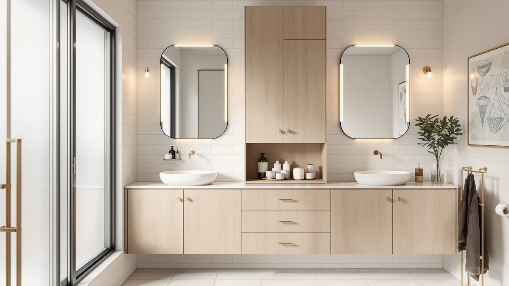

Best Bathroom Mirror Cabinets with Lights (2026)
Prices and picks verified as of September 2026. Independent, reader-supported reviews.


Quick Answer
If your bathroom is short on storage, the fastest fix is the wall you're already ignoring above the toilet. We compared seven freestanding cabinets, over-the-toilet racks, and stackable bins on footprint, build quality, and price, and the Meilocar Over the Toilet Storage is the pick that fits the most bathrooms without any drilling.
Our pick: Meilocar Over the Toilet Storage — $79.99 Check Price on Amazon
Bottom line: our top pick is the Meilocar Over the Toilet Storage Cabinet at $79.99. The best budget option is the Vtopmart 4 Pack Large Stackable Storage Drawers at $31.89.
Things to Know Before You Buy
- Depth matters more than height. The Iwell is just 11.8 inches deep, so it fits the dead space beside a toilet, while the TEENFON's 23.6-inch depth holds more but eats up more floor. Measure your gap before picking by height alone.
- An over-the-toilet rack and a freestanding cabinet solve different problems. The Meilocar uses wall space you're already wasting above the tank; a cabinet like the Iwell or usikey stands on its own and generally holds more. Pick based on whether you have floor space to spare.
- Tall and narrow means top-heavy once loaded. Every tower here ships with an anti-tip strap. It's one screw into a stud, and it's worth using once the shelves are full of bottles and towels.
- Bins keep a cabinet from becoming a pile. Open shelves collect clutter fast, so a set like the Vtopmart stackable bins is worth adding inside any cabinet you buy.
Most bathrooms run out of storage long before they run out of stuff. The counter fills with bottles, the space under the sink turns into a black hole, and towels end up stacked on the toilet tank. The fix usually isn't a bigger bathroom. It's using the vertical space you already have, whether that's a tall cabinet against a bare wall or a rack that straddles the toilet itself.
We compared seven options across footprint, build quality, and price. The Meilocar Over the Toilet Storage ($79.99) is our top recommendation for most people, since it adds five shelves above the tank without drilling into anything. If you have floor space to spare and want more capacity, the Iwell 67" Tall Bathroom Cabinet ($94.99) packs nearly six feet of shelving into an 11.8-inch-deep footprint, and the usikey 67'' Tall Bathroom Cabinet ($94.99) offers a similar profile with mixed open and closed storage.
A cabinet or rack is only half the job. Open shelves collect clutter as fast as a countertop, so we also compared the Vtopmart 4 Pack Large Stackable bins ($34.99) and the compact BEWISHOME Bathroom Storage Cabinet Small ($38.97) for bathrooms that need order more than raw capacity. Below, we break down what each piece does best and where it falls short.
Why You Should Trust Us
I'm Ilane Tall, and I cover bathroom storage and organization for Best Bathroom Storage. Most of what I write comes down to one question: how do you fit more into a small bathroom without making it feel cramped or cluttered? I look at storage the way someone living with it does, paying attention to footprint, stability, and how a piece holds up once it's actually full.
For this guide I focused on freestanding cabinets, over-the-toilet racks, and stackable organizers, the pieces that solve the most common bathroom storage problem without requiring anyone to drill into tile. I have no relationship with any of these brands. We earn a commission if you buy through our links, but that has no bearing on which products we recommend or what we say about their flaws.
How We Picked
We started with the ways people actually search for bathroom storage: a tall cabinet for an empty wall, a rack for the space above the toilet, or bins to organize whatever shelving they already have. We included all three, because most bathrooms need a combination rather than a single piece.
From there we screened on footprint, build, and value. We prioritized freestanding designs that need no permanent installation, slim profiles that fit the tight gaps small bathrooms actually have, and materials suited to a humid room. We ruled out anything that required wall-mounting into tile or cost more than its storage payoff justified.
How We Compared
We compared each piece on how much usable storage it adds for its footprint, how stable it looks once fully loaded based on verified buyer photos and reviews, and how its materials are likely to hold up in a damp bathroom over time. For the cabinets, that meant weighing published dimensions against typical bathroom floor gaps and checking owner reports for wobble, shelf sag, or doors that don't sit flush.
For the racks and bins, we looked at fit and finish: whether the bins stack squarely, whether shelves are wide enough for everyday bottles and toilet paper, and whether the hardware resists rust based on what verified reviewers report after months of use. We also weighed assembly complexity, since a cabinet that takes an hour to build with a missing screw is a different product than a rack you assemble in minutes.
Our Picks

Meilocar Over the Toilet Storage
What we like
- Straddles the toilet tank, so it uses wall space instead of floor space
- Five open shelves add real capacity without any drilling
- Metal-and-wood frame feels sturdier than an all-particleboard rack
- No tools needed beyond basic assembly to set it in place
Flaws but not dealbreakers
- Open shelves mean loose items are visible unless you add bins
- Fit depends on your toilet's tank height and shape, so measure first
| Material | Metal / wood |
| Size | 5 Open Shelves |
The Meilocar is the simplest way to add storage to a bathroom that has no floor space to give up. It sits over the toilet tank on its own frame, so there's nothing to drill and nothing to anchor into tile, which makes it a solid pick for renters.
Because the shelves are open, it works best paired with a set of bins or baskets to keep bottles and toiletries from looking cluttered. Owners report it holds everyday bathroom items well, though heavier loads on the top shelf are worth balancing with the anti-tip guidance in the manual.

Vtopmart 4 Pack Large Stackable
What we like
- Four bins turn one open shelf into four organized compartments
- Stacks securely, so a full bin on top won't slide off the one below
- Wide openings make it easy to grab bottles or toiletries one-handed
Flaws but not dealbreakers
- Adds no shelving of its own, so it needs a cabinet or shelf to sit on
- Plastic construction, not a fit for anyone who wants a furniture-grade look
| Material | Metal / wood |
| Size | Large Storage Bins |
A cabinet or rack only solves half the storage problem. Left open, shelves collect clutter as fast as a countertop, and this is the set we'd add to keep that from happening. The four bins are sized to hold rolled towels, toiletries, or cleaning supplies without bowing.
They're built to stack, so you can double up storage on a single shelf instead of leaving the top half of a cabinet empty. Reviewers consistently note the stacking feels secure even when each bin is loaded, which is the detail cheaper sets tend to get wrong.

BEWISHOME Bathroom Storage Cabinet Small
What we like
- At just 7.9 inches deep, it fits gaps most cabinets can't
- Low price makes it an easy add-on rather than a big purchase
- Freestanding design needs no wall anchoring to set up
Flaws but not dealbreakers
- 31 inches tall means less total shelf space than the taller towers
- Narrow shelves hold less per level than a wider cabinet
| Material | Metal / wood |
| Size | 7.9" D x 14.6" W x 31" H |
This is the pick for a bathroom where even the slimmest tall cabinet won't fit. At 7.9 inches deep and 14.6 inches wide, it tucks into corners and gaps that would otherwise sit empty, and its shorter 31-inch height keeps it out of the way of a nearby mirror or towel bar.
It won't replace a full-height tower for raw capacity, but as a low-cost way to add a shelf or two of enclosed storage to a small bathroom, it does the job without demanding much space or budget.

Iwell 67" Tall Bathroom Cabinet
What we like
- At 11.8 inches deep, it fits gaps where bulkier cabinets won't go
- 67 inches of height puts nearly six feet of shelving on a small footprint
- Metal-and-wood frame feels sturdier than all-particleboard cabinets
- Mix of open shelves and a closed lower cabinet hides clutter and displays the rest
Flaws but not dealbreakers
- Tall and narrow, so it needs the anti-tip strap once loaded up high
- Assembly takes time and a screwdriver out of the box
- The 15.7-inch width holds less per shelf than a wider cabinet
| Material | Metal / wood |
| Size | 11.8"D x 15.7"W x 67.1"H |
The Iwell is the cabinet we'd point most people to first. Its 11.8-inch depth is slim enough to slide into the dead space beside a toilet or sink, yet its 67-inch height still delivers nearly six feet of usable shelving.
The mix of open shelves up top and a closed cabinet at the bottom lets you display towels while keeping less attractive items out of sight. Owners report the metal-and-wood frame holds up well to bathroom humidity, though the anti-tip strap is worth using once the upper shelves are loaded.

Tall Bathroom Storage Cabinets with
What we like
- 67.5-inch height gives it the most total shelf space in this lineup
- Sturdier build feels more stable at full height than the budget picks
- Wider shelves hold more per level than the slimmer Iwell or BEWISHOME
Flaws but not dealbreakers
- The most expensive pick here, at $159.99
- Takes up more floor space than the slim-depth cabinets
| Material | Metal / wood |
| Size | 67.5in |
If the Iwell's 15.7-inch width feels too narrow for what you need to store, this HIFIT cabinet trades a bit more floor space for a sturdier frame and wider shelves. At 67.5 inches tall, it holds roughly as much vertical shelving as the Iwell, but each shelf carries more.
It costs the most of any pick in this guide, so it's best suited to buyers who have already decided they want a full-size cabinet and are choosing between capacity and price rather than trying to save money.

usikey 67'' Tall Bathroom Cabinet
What we like
- At 72 inches, it's the tallest cabinet in this guide for maximum shelving
- Mix of open and closed storage matches the Iwell's practical layout
- Priced the same as the Iwell despite the extra height
Flaws but not dealbreakers
- Needs a full 72 inches of wall clearance, which rules out low ceilings
- Extra height makes the anti-tip strap even more important once loaded
| Material | Metal / wood |
| Size | 72''H |
The usikey is essentially the Iwell's taller sibling: same slim profile and the same mix of open shelves over closed cabinet doors, but stretched to a full 72 inches. That extra five inches adds another shelf's worth of storage for the same price.
The tradeoff is clearance. Before buying, measure from the floor to any ceiling slope, light fixture, or shelf above where it will stand, since 72 inches leaves less margin for error than the shorter towers in this guide.

TEENFON 57.8" H Tall Bathroom
What we like
- 57.8-inch height clears low shelves and slanted ceilings the taller towers can't
- 23.6-inch depth holds more per shelf than the slim Iwell or usikey
- Lower center of gravity feels steadier than the 67-72 inch towers
Flaws but not dealbreakers
- 23.6 inches of depth eats up more floor space in a tight bathroom
- Shorter overall height means less total shelving than the taller options
| Material | Metal / wood |
| Size | 11.8"W*23.6"D*57.8"H |
The TEENFON takes the opposite approach from the Iwell and usikey: instead of going tall and slim, it stays at a more modest 57.8 inches and adds depth instead, at 23.6 inches. That makes it the pick for a bathroom with a sloped ceiling or a shelf overhead that rules out a 67-plus-inch tower.
The extra depth also means each shelf holds more than the slimmer cabinets in this guide, which is worth the additional floor space if your bathroom has room to give up. Reviewers consistently note it feels steadier than the taller towers, which tracks with its lower overall height.
Quick Comparison
| Product | Material | Price | Rating | Best for | Get it |
|---|---|---|---|---|---|
| Meilocar Over the Toilet Storage | Metal / wood | $79.99 | 4 | No floor space to spare | View on Amazon → |
| Vtopmart 4 Pack Large Stackable | Metal / wood | $34.99 | 4 | Organizing shelves you already have | View on Amazon → |
| BEWISHOME Bathroom Storage Cabinet Small | Metal / wood | $38.97 | 4 | The narrowest gaps | View on Amazon → |
| Iwell 67" Tall Bathroom Cabinet | Metal / wood | $94.99 | 4 | Most bathrooms | View on Amazon → |
| Tall Bathroom Storage Cabinets with | Metal / wood | $159.99 | 4 | Maximum capacity | View on Amazon → |
| usikey 67'' Tall Bathroom Cabinet | Metal / wood | $94.99 | 4 | Highest ceilings | View on Amazon → |
| TEENFON 57.8" H Tall Bathroom | Metal / wood | $119.99 | 4 | Lower ceiling clearance | View on Amazon → |
Do I need to anchor a tall bathroom storage cabinet to the wall?
The freestanding towers here, including the Iwell and usikey cabinets, stand on their own without drilling into tile.
What's the difference between a storage cabinet and an over-the-toilet rack?
An over-the-toilet rack, like the Meilocar, straddles the toilet tank to use wall space that's otherwise empty.
The Competition
A few categories of bathroom storage came up in our research but didn't make the final list, and it's worth knowing why.
Wall-mounted cabinets save floor space entirely, but they require drilling into tile and finding a stud or heavy-duty anchors. That rules them out for renters and for anyone who doesn't want permanent holes in tile, which is why every pick in this guide is freestanding or hangs on the toilet tank instead.
All-particleboard cabinets undercut our picks by $15 to $20, but they tend to swell and sag when they meet sustained bathroom humidity, and their cam-lock joints loosen over time. The metal-and-wood builds we recommend cost a little more and hold up better in a damp room.
No-name over-the-toilet racks that ship without a real brand or verified reviews are common at a lower price than the Meilocar, but with fewer buyer reports to confirm stability, we'd rather point readers to a pick with a longer review history.
Finally, we passed on the cheapest generic bin sets. They undercut the Vtopmart organizers by a few dollars, but thinner plastic and less secure stacking mean a shorter useful life in a wet bathroom.
Frequently Asked Questions
Do I need to anchor a tall bathroom storage cabinet to the wall?
The freestanding towers here, including the Iwell and usikey cabinets, stand on their own without drilling into tile. But any narrow cabinet over five feet tall gets top-heavy once the shelves are loaded, so we recommend using the included anti-tip strap to secure it to a wall stud. It's one screw, and it's worth it in a home with kids or pets.
What's the difference between a storage cabinet and an over-the-toilet rack?
An over-the-toilet rack, like the Meilocar, straddles the toilet tank to use wall space that's otherwise empty. A freestanding cabinet, like the Iwell or TEENFON, stands beside the toilet or against any wall and generally holds more, since it isn't limited to the toilet's footprint. If you have floor space to spare, a cabinet usually wins on capacity; if you don't, the over-the-toilet rack is the better fit.
How much weight can stackable bathroom storage bins hold?
The Vtopmart bins in this guide are rated to hold everyday bathroom items like rolled towels, toiletries, and cleaning supplies without the shelf bowing, and they're designed to stack securely so a full bin on top won't slide off one below it. As with any stackable organizer, keep the heaviest items in the bottom bin to keep the stack stable.